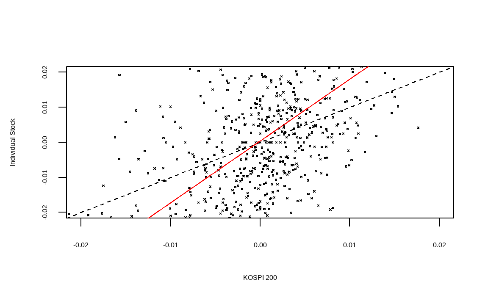
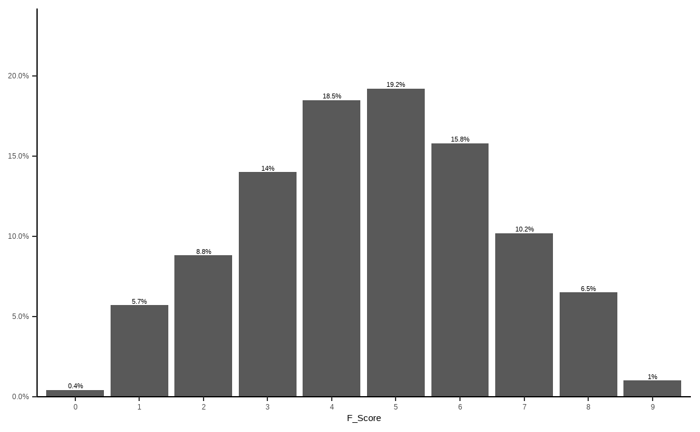

Chapter 9 퀀트 전략을 이용한 종목선정 (기본)
투자에 필요한 주가, 재무제표, 가치지표 데이터가 준비되었다면 퀀트 전략을 활용해 투자하고자 하는 종목을 선정해야 합니다. 퀀트 투자는 크게 포트폴리오 운용 전략과 트레이딩 전략으로 나눌 수 있습니다. 포트폴리오 운용 전략은 과거 주식 시장을 분석해 좋은 주식의 기준을 찾아낸 후 해당 기준에 만족하는 종목을 매수하거나, 이와 반대에 있는 나쁜 주식을 공매도하기도 합니다. 투자의 속도가 느리며, 다수의 종목을 하나의 포트폴리오로 구성해 운용하는 특징이 있습니다. 반면 트레이딩 전략은 단기간에 발생되는 주식의 움직임을 연구한 후 예측해 매수 혹은 매도하는 전략입니다. 투자의 속도가 빠르며 소수의 종목을 대상으로 합니다.
| 기준 | 포트폴리오 운용 전략 | 트레이딩 전략 |
|---|---|---|
| 투자철학 | 규칙에 기반한 투자 | 규칙에 기반한 투자 |
| 투자목적 | 좋은 주식을 매수 | 좋은 시점을 매수 |
| 학문적 기반 | 경제학, 통계학 등 | 통계학, 공학, 정보처리 등 |
| 투자의 속도 | 느림 | 빠름 |
이 중 이 책에서는 포트폴리오에 기반한 운용 전략에 대해 다룹니다. 주식의 수익률에 영향을 미치는 요소를 팩터(Factor)라고 합니다. 즉 팩터의 강도가 양인 종목들로 구성한 포트폴리오는 향후 수익률이 높을 것으로 예상되며, 팩터의 강도가 음인 종목들로 구성한 포트폴리오는 반대로 향후 수익률이 낮을 것으로 예상됩니다.
팩터에 대한 연구는 학자들에 의해 오랫동안 진행되어 왔지만, 일반 투자자들이 이러한 논문을 모두 찾아보고 연구하기는 사실상 불가능에 가깝습니다. 그러나 최근에는 스마트 베타라는 이름으로 팩터 투자가 대중화되고 있습니다. 최근 유행하고 있는 스마트 베타 ETF는 팩터를 기준으로 포트폴리오를 구성한 상품으로서, 학계나 실무에서 검증된 팩터 전략을 기반으로 합니다.
해당 상품들의 웹사이트나 투자설명서에는 종목 선정 기준에 대해 자세히 나와 있으므로 스마트 베타 ETF에 나와 있는 투자 전략을 자세히 분석하는 것만으로도 훌륭한 퀀트 투자 전략을 만들 수 있습니다.

그림 9.1: 스마트베타 ETF 전략 예시
이 CHAPTER에서는 투자에 많이 활용되는 기본적인 팩터에 대해 알아보고, 우리가 구한 데이터를 바탕으로 각 팩터별 투자 종목을 선택하는 방법을 알아보겠습니다.
9.1 베타 이해하기
투자자들이라면 누구나 한 번은 베타(Beta)라는 용어를 들어봤을 것입니다. 기본적으로 주식시장의 움직임은 개별 주식의 수익률에 가장 크게 영향을 주는 요소일 수밖에 없습니다. 아무리 좋은 주식도 주식시장이 폭락한다면 같이 떨어지며, 아무리 나쁜 주식도 주식시장이 상승한다면 대부분 같이 오르기 마련입니다.
개별 주식이 전체 주식시장의 변동에 반응하는 정도를 나타낸 값이 베타입니다. 베타가 1이라는 뜻은 주식시장과 움직임이 정확히 같다는 뜻으로서 시장 그 자체를 나타냅니다. 베타가 1.5라는 뜻은 주식시장이 수익률이 +1%일 때 개별 주식의 수익률은 +1.5% 움직이며, 반대로 주식시장의 수익률이 -1%일 때 개별 주식의 수익률은 -1.5% 움직인다는 뜻입니다. 반면 베타가 0.5라면 주식시장 수익률의 절반 정도만 움직이게 됩니다.
| 베타 | 주식시장이 +1% 일 경우 | 주식시장이 -1% 일 경우 |
|---|---|---|
| 0.5 | +0.5% | -0.5% |
| 1.0 | +1.0% | -1.0% |
| 1.5 | +1.5% | -1.5% |
이처럼 베타가 큰 주식은 주식시장보다 수익률의 움직임이 크며, 반대로 베타가 낮은 주식은 주식시장보다 수익률의 움직임이 작습니다. 따라서 일반적으로 상승장이 기대될 때는 베타가 큰 주식에, 하락장이 기대될 때는 베타가 낮은 주식에 투자하는 것이 좋습니다.
주식시장에서 베타는 통계학의 회귀분석모형에서 기울기를 나타내는 베타와 정확히 의미가 같습니다. 회귀분석모형은 \(y = a + bx\) 형태로 나타나며, 회귀계수인 \(b\)는 \(x\)의 변화에 따른 \(y\)의 변화의 기울기입니다. 이를 주식에 적용한 모형이 자산가격결정모형(CAPM: Capital Asset Pricing Model)(Sharpe 1964)이며, 그 식은 다음과 같습니다.
\[회귀분석모형: y = a + bx\] \[자산가격결정모형: R_i = R_f + \beta_i\times[R_m - R_f]\]
먼저 회귀분석모형의 상수항인 \(a\)에 해당하는 부분은 무위험 수익률을 나타내는 \(R_f\)입니다. 독립변수인 \(x\)에 해당하는 부분은 무위험 수익률 대비 주식 시장의 초과 수익률을 나타내는 시장위험 프리미엄인 \(R_m - R_f\)입니다. 종속변수인 \(y\)에 해당하는 부분은 개별주식의 수익률을 나타내는 \(R_i\)이며, 최종적으로 회귀계수인 \(b\)에 해당하는 부분은 개별 주식의 베타입니다.
| 구분 | 회귀분석모형 | 자산가격결정모형 |
|---|---|---|
| 상수항 | a | \(R_f\) (무위험 수익률) |
| 독립변수 | x | \(R_m - R_f\) (시장위험 프리미엄) |
| 종속변수 | y | \(R_i\) (개별주식의 수익률) |
| 회귀계수 | b | \(\beta_i\) (개별주식의 베타) |
통계학에서 회귀계수는 \(\beta = \frac{cov(x,y)}{\sigma_x^2}\) 형태로 구할 수 있으며, \(x\)와 \(y\)에 각각 시장수익률과 개별주식의 수익률을 대입할 경우 개별주식의 베타는 \(\beta_i= \rho(i,m) \times\frac{\sigma_i}{\sigma_m}\) 형태로 구할 수 있습니다. 그러나 이러한 수식을 모르더라도 R에서는 간단히 베타를 구할 수 있습니다.
9.1.1 베타 계산하기
베타를 구하는 방법을 알아보기 위해 주식시장에 대한 대용치로 KOSPI 200 ETF, 개별주식으로는 전통적 고베타주인 증권주를 이용하겠습니다.
library(quantmod)
library(PerformanceAnalytics)
library(magrittr)
symbols = c('102110.KS', '039490.KS')
getSymbols(symbols)## [1] "102110.KS" "039490.KS"prices = do.call(cbind,
lapply(symbols, function(x)Cl(get(x))))
ret = Return.calculate(prices)
ret = ret['2016-01::2018-12']- KOSPI 200 ETF인 TIGER 200(102110.KS), 증권주인 키움증권(039490.KS)의 티커를 입력합니다.
getSymbols()함수를 이용하여 해당 티커들의 데이터를 다운로드 받습니다.lapply()함수 내에Cl()과get()함수를 사용하여 종가에 해당하는 데이터만 추출하며, 리스트 형태의 데이터를 열의 형태로 묶어주기 위해do.call()함수와cbind()함수를 사용해 줍니다.Return.calculate()함수를 통해 수익률을 계산해 줍니다.- xts 형식의 데이터는 대괄호 속에 [‘시작일자::종료일자’]와 같은 형태로, 원하는 날짜를 편리하게 선택할 수 있으며, 위에서는 2016년 1월부터 2018년 12월 까지 데이터를 선택합니다.
rm = ret[, 1]
ri = ret[, 2]
reg = lm(ri ~ rm)
summary(reg)##
## Call:
## lm(formula = ri ~ rm)
##
## Residuals:
## Min 1Q Median 3Q Max
## -0.06890 -0.01296 -0.00171 0.01082 0.09541
##
## Coefficients:
## Estimate Std. Error t value Pr(>|t|)
## (Intercept) 0.000400 0.000728 0.55 0.58
## rm 1.764722 0.091131 19.36 <2e-16 ***
## ---
## Signif. codes: 0 '***' 0.001 '**' 0.01 '*' 0.05 '.' 0.1 ' ' 1
##
## Residual standard error: 0.0196 on 721 degrees of freedom
## (결측으로 인하여 8개의 관측치가 삭제되었습니다.)
## Multiple R-squared: 0.342, Adjusted R-squared: 0.341
## F-statistic: 375 on 1 and 721 DF, p-value: <2e-16증권주를 대상으로 베타를 구하기 위한 회귀분석을 실시합니다. 자산가격결정모형의 수식인 \(R_i = R_f + \beta_i \times [R_m - R_f]\) 에서 편의를 위해 무위험 수익률인 \(R_f\)를 0으로 가정하면, \(R_i = \beta_i \times R_m\)의 형태로 나타낼 수 있습니다. 이 중 \(R_m\)는 독립변수인 주식시장의 수익률을 의미하고, \(R_i\)는 종속변수인 개별 주식의 수익률을 의미합니다.
- 독립변수는 첫 번째 열인 KOSPI 200 ETF의 수익률을 선택하며, 종속변수는 두번째 열인 증권주의 수익률을 선택합니다.
lm()함수를 통해 손쉽게 선형회귀분석을 실시할 수 있으며, 회귀분석의 결과를 reg 변수에 저장합니다.summary()함수는 데이터의 요약 정보를 나타내며, 해당 예시에서는 회귀분석 결과에 대한 정보를 보여줍니다.
회귀분석의 결과 중 가장 중요한 부분은 계수를 나타내는 Coefficients입니다. Intercept는 회귀분석의 상수항에 해당하는 부분으로서, 값이 거의 0에 가깝고 t값 또한 매우 작아 유의하지 않음이 보입니다. 우리가 원하는 베타에 해당하는 부분 은 \(x\)의 Estimate로서, 베타값이 1.76으로 증권주의 특성인 고베타주임이 확인되며, t값 또한 19.36로 매우 유의한 결과입니다. 조정된 결정계수(Adjusted R-square)는 0.34를 보입니다.
9.1.2 베타 시각화
이제 구해진 베타를 그림으로 표현해보겠습니다.
plot(as.numeric(rm), as.numeric(ri), pch = 4, cex = 0.3,
xlab = "KOSPI 200", ylab = "Individual Stock",
xlim = c(-0.02, 0.02), ylim = c(-0.02, 0.02))
abline(a = 0, b = 1, lty = 2)
abline(reg, col = 'red')
plot()함수를 통해 그림을 그려주며, x축과 y축에 주식시장 수익률과 개별 주식 수익률을 입력합니다. pch는 점들의 모양을, cex는 점들의 크기를 나타내며, xlab과 ylab은 각각 x축과 y축에 들어갈 문구를 나타냅니다. xlim과 ylim은 x 축과 y축의 최소 및 최대 범위를 지정해줍니다.- 첫번째
abline()에서 a는 상수, b는 직선의 기울기, lty는 선의 유형을 나타냅니다. 이를 통해 기울기, 즉 베타가 1일 경우의 선을 점선으로 표현합니다. - 두번째
abline()에 회귀분석 결과를 입력해주면 자동적으로 회귀식을 그려줍니다.
검은색의 점선이 기울기가 1인 경우이며, 주황색의 직선이 증권주의 회귀분석결과를 나타냅니다. 기울기가 1보다 훨씬 가파름이 확인되며, 즉 베타가 1보다 크다는 사실을 알 수 있습니다.
9.2 저변동성 전략
금융 시장에서 변동성은 수익률이 움직이는 정도로서, 일반적으로 표준편차가 사용됩니다. 표준편차는 자료가 평균을 중심으로 얼마나 퍼져 있는지를 나타내는 수치로서, 수식은 다음과 같습니다.
\[\sigma = \sqrt{\frac{\sum_{i=1}^{n}{(x_i - \bar{x})^2}}{n-1}}\]
관측값의 개수가 적을 경우에는 수식에 대입해 계산하는 것이 가능하지만, 관측값이 수백 혹은 수천 개로 늘어날 경우 컴퓨터를 이용하지 않고 계산하기는 사실상 불가능합니다. R에서는 복잡한 계산 과정 없이 sd() 함수를 이용해 간단하게 표준편차를 계산할 수 있습니다.
example = c(85, 76, 73, 80, 72)
sd(example)## [1] 5.357개별 주식의 표준편차를 측정할 때는 주식의 가격이 아닌 수익률로 계산해야 합니다. 수익률의 표준편차가 크면 수익률이 위아래로 많이 움직여 위험한 종목으로 여겨집니다. 반면 표준편차가 작으면 수익률의 움직임이 적어 상대적으로 안전한 종목으로 여겨집니다.
전통적 금융 이론에서는 수익률의 변동성이 클수록 위험이 크고, 이런 위험에 대한 보상으로 기대수익률이 높아야 한다고 보았습니다. 따라서 고변동성 종목의 기대수익률이 크고, 저변동성 종목의 기대수익률이 낮은 고위험 고수익이 당연한 믿음이었습니다. 그러나 현실에서는 오히려 변동성이 낮은 종목들의 수익률이 변동성이 높은 종목들의 수익률보다 높은, 저변동성 효과가 발견되고 있습니다. 이러한 저변동성 효과가 발생하는 원인으로는 여러 가설이 있습니다.
투자자들은 대체로 자신의 능력을 과신하는 경향이 있으며, 복권과 같이 큰 수익을 가져다 주는 고변동성 주식을 선호하는 경향이 있습니다. 이러한 결과로 고변동성 주식은 과대 평가되어 수익률이 낮은 반면, 과소 평가된 저변동성 주식들은 높은 수익률을 보이게 됩니다. (Brunnermeier and Parker 2005)
대부분 기관투자가들이 레버리지 투자가 되지 않는 상황에서, 벤치마크 대비 높은 성과를 얻기 위해 고변동성 주식에 투자하는 경향이 있으며, 이 또한 고변동성 주식이 과대 평가되는 결과로 이어집니다. (Baker, Bradley, and Wurgler 2011)
시장의 상승과 하락이 반복됨에 따라 고변동성 주식이 변동성 손실(Volatility Drag)로 인해 수익률이 하락하게 되는 이유도 있습니다. (Sefton et al. 2011)
주식의 위험은 변동성뿐만 아니라 베타 등 여러 지표로도 측정할 수 있습니다. 저변동성 효과와 비슷하게 고유변동성이 낮은 주식의 수익률이 높은 저고유변동성 효과(Ang et al. 2009), 베타가 낮은 주식의 수익률이 오히려 높은 저베타 효과(Baker, Bradley, and Taliaferro 2014)도 발견되고 있으며, 이러한 효과들을 합쳐 저위험 효과라고 부르기도 합니다.
9.2.1 저변동성 포트폴리오 구하기: 일간 기준
먼저 최근 1년 일간 수익률 기준 변동성이 낮은 30종목을 선택하겠습니다.
library(stringr)
library(xts)
library(PerformanceAnalytics)
library(magrittr)
library(ggplot2)
library(dplyr)
KOR_price = read.csv('data/KOR_price.csv', row.names = 1,
stringsAsFactors = FALSE) %>% as.xts()
KOR_ticker = read.csv('data/KOR_ticker.csv', row.names = 1,
stringsAsFactors = FALSE)
KOR_ticker$'종목코드' =
str_pad(KOR_ticker$'종목코드', 6, 'left', 0)
ret = Return.calculate(KOR_price)
std_12m_daily = xts::last(ret, 252) %>% apply(., 2, sd) %>%
multiply_by(sqrt(252))- 저장해둔 가격 정보와 티커 정보를 불러옵니다. 가격 정보는
as.xts()함수를 통해 xts 형태로 변경합니다. Return.calculate()함수를 통해 수익률을 구합니다.last()함수는 마지막 n개 데이터를 선택해주는 함수이며, 1년 영업일 기준인 252개 데이터를 선택합니다. dplyr 패키지의last()함수와 이름이 같으므로,xts::last()형식을 통해 xts 패키지의 함수임을 정의해줍니다.apply()함수를 통해 sd 즉 변동성을 계산해주며, 연율화를 해주기 위해multiply_by()함수를 통해 \(\sqrt{252}\)를 곱해줍니다.
std_12m_daily %>%
data.frame() %>%
ggplot(aes(x = (`.`))) +
geom_histogram(binwidth = 0.01) +
annotate("rect", xmin = -0.02, xmax = 0.02,
ymin = 0,
ymax = sum(std_12m_daily == 0, na.rm = TRUE) * 1.1,
alpha=0.3, fill="red") +
xlab(NULL)
std_12m_daily[std_12m_daily == 0] = NA
변동성을 히스토그램으로 나타내보면, 0에 위치하는 종목들이 다수 있습니다. 해당 종목들은 최근 1년간 거래정지로 인해 가격이 변하지 않았고, 이로 인해 변동성이 없는 종목들입니다. 해당 종목들은 NA로 처리해줍니다.
std_12m_daily[rank(std_12m_daily) <= 30]## X033780 X007310 X267980 X005180 X001720 X072710 X002960 X004690 X000480 X001270
## 0.20607 0.20130 0.19015 0.19828 0.19585 0.18910 0.19321 0.19741 0.18269 0.20850
## X004890 X015360 X018120 X036190 X004970 X117580 X100250 X005990 X034590 X078000
## 0.14252 0.18217 0.10437 0.20617 0.19245 0.16565 0.18025 0.20524 0.13579 0.19731
## X040420 X225190 X049720 X109860 X196450 X000850 X014100 X084670 X066790 X058450
## 0.14140 0.19306 0.20715 0.20045 0.20742 0.18812 0.15639 0.19826 0.15281 0.09954std_12m_daily[rank(std_12m_daily) <= 30] %>%
data.frame() %>%
ggplot(aes(x = rep(1:30), y = `.`)) +
geom_col() +
xlab(NULL)
rank() 함수를 통해 순위를 구할 수 있으며, R은 기본적으로 오름차순 즉 가장 낮은값의 순위가 1이 됩니다. 따라서 변동성이 낮을수록 높은 순위가 되며, 30위 이하의 순위를 선택하면 변동성이 낮은 30종목이 선택됩니다. 또한 ggplot() 함수를 이용해 해당 종목들의 변동성을 확인해볼 수도 있습니다.
이번에는 해당 종목들의 티커 및 종목명을 확인하겠습니다.
invest_lowvol = rank(std_12m_daily) <= 30
KOR_ticker[invest_lowvol, ] %>%
select(`종목코드`, `종목명`) %>%
mutate(`변동성` = round(std_12m_daily[invest_lowvol], 4))## 종목코드 종목명 변동성
## 33 033780 KT&G 0.2061
## 156 007310 오뚜기 0.2013
## 394 267980 매일유업 0.1902
## 401 005180 빙그레 0.1983
## 409 001720 신영증권 0.1959
## 587 072710 농심홀딩스 0.1891
## 599 002960 한국쉘석유 0.1932
## 612 004690 삼천리 0.1974
## 619 000480 조선내화 0.1827
## 838 001270 부국증권 0.2085
## 883 004890 동일산업 0.1425
## 935 015360 예스코홀딩스 0.1822
## 953 018120 진로발효 0.1044
## 992 036190 금화피에스시 0.2062
## 1000 004970 신라교역 0.1925
## 1103 117580 대성에너지 0.1656
## 1118 100250 진양홀딩스 0.1803
## 1175 005990 매일홀딩스 0.2052
## 1407 034590 인천도시가스 0.1358
## 1449 078000 텔코웨어 0.1973
## 1488 040420 정상제이엘에스 0.1414
## 1552 225190 삼양옵틱스 0.1931
## 1567 049720 고려신용정보 0.2071
## 1645 109860 동일금속 0.2004
## 1752 196450 코아시아옵틱스 0.2074
## 1784 000850 화천기공 0.1881
## 1866 014100 메디앙스 0.1564
## 1897 084670 동양고속 0.1983
## 2027 066790 씨씨에스 0.1528
## 2179 058450 일야 0.0995티커와 종목명, 연율화 변동성을 확인할 수 있습니다.
9.2.2 저변동성 포트폴리오 구하기: 주간 기준
이번에는 일간 변동성이 아닌 주간 변동성을 기준으로 저변동성 종목을 선택하겠습니다.
std_12m_weekly = xts::last(ret, 252) %>%
apply.weekly(Return.cumulative) %>%
apply(., 2, sd) %>% multiply_by(sqrt(52))
std_12m_weekly[std_12m_weekly == 0] = NA먼저 최근 252일 수익률울 선택한 후, apply.weekly() 함수 내 Return.cumulative를 입력해 주간 수익률을 계산하며, 연율화를 위해 연간 주수에 해당하는 \(\sqrt{52}\)를 곱해줍니다. 이 외에도 apply.monthly(), apply.yearly() 함수 등으로 일간 수익률을 월간, 연간 수익률 등으로 변환할 수 있습니다. 그 후 과정은 위와 동일합니다.
std_12m_weekly[rank(std_12m_weekly) <= 30]## X361610 X007310 X034310 X267980 X001720 X294570 X072710 X357230 X352480 X004890
## 0.11255 0.17476 0.19439 0.19011 0.18736 0.14925 0.15241 0.05932 0.02981 0.15072
## X015360 X018120 X333620 X036190 X004970 X117580 X100250 X034590 X078000 X040420
## 0.15723 0.10973 0.18453 0.18305 0.18689 0.14606 0.19101 0.11091 0.18118 0.16706
## X007590 X109860 X004450 X014100 X084670 X115310 X066790 X069330 X058450 X347140
## 0.19270 0.17302 0.13276 0.17478 0.16647 0.18687 0.16003 0.04186 0.12522 0.14816invest_lowvol_weekly = rank(std_12m_weekly) <= 30
KOR_ticker[invest_lowvol_weekly, ] %>%
select(`종목코드`, `종목명`) %>%
mutate(`변동성` =
round(std_12m_weekly[invest_lowvol_weekly], 4))## 종목코드 종목명 변동성
## 38 361610 SK아이이테크놀로지 0.1125
## 156 007310 오뚜기 0.1748
## 348 034310 NICE 0.1944
## 394 267980 매일유업 0.1901
## 409 001720 신영증권 0.1874
## 503 294570 쿠콘 0.1493
## 587 072710 농심홀딩스 0.1524
## 627 357230 에이치피오 0.0593
## 876 352480 씨앤씨인터내셔널 0.0298
## 883 004890 동일산업 0.1507
## 935 015360 예스코홀딩스 0.1572
## 953 018120 진로발효 0.1097
## 975 333620 엔시스 0.1845
## 992 036190 금화피에스시 0.1830
## 1000 004970 신라교역 0.1869
## 1103 117580 대성에너지 0.1461
## 1118 100250 진양홀딩스 0.1910
## 1407 034590 인천도시가스 0.1109
## 1449 078000 텔코웨어 0.1812
## 1488 040420 정상제이엘에스 0.1671
## 1524 007590 동방아그로 0.1927
## 1645 109860 동일금속 0.1730
## 1700 004450 삼화왕관 0.1328
## 1866 014100 메디앙스 0.1748
## 1897 084670 동양고속 0.1665
## 1914 115310 인포바인 0.1869
## 2027 066790 씨씨에스 0.1600
## 2148 069330 유아이디 0.0419
## 2179 058450 일야 0.1252
## 2201 347140 케이프이에스제4호 0.1482주간 수익률의 변동성이 낮은 30종목을 선택해 종목코드, 종목명, 연율화 변동성을 확인합니다.
intersect(KOR_ticker[invest_lowvol, '종목명'],
KOR_ticker[invest_lowvol_weekly, '종목명'])## [1] "오뚜기" "매일유업" "신영증권" "농심홀딩스"
## [5] "동일산업" "예스코홀딩스" "진로발효" "금화피에스시"
## [9] "신라교역" "대성에너지" "진양홀딩스" "인천도시가스"
## [13] "텔코웨어" "정상제이엘에스" "동일금속" "메디앙스"
## [17] "동양고속" "씨씨에스" "일야"intersect() 함수를 통해 일간 변동성 기준과 주간 변동성 기준 모두에 포함되는 종목을 찾을 수 있습니다.
9.3 모멘텀 전략
투자에서 모멘텀이란 주가 혹은 이익의 추세로서, 상승 추세의 주식은 지속적으로 상승하며 하락 추세의 주식은 지속적으로 하락하는 현상을 말합니다. 모멘텀 현상이 발생하는 가장 큰 원인은 투자자들의 스스로에 대한 과잉 신뢰 때문입니다. 사람들은 자신의 판단을 지지하는 정보에 대해서는 과잉 반응하고, 자신의 판단을 부정하는 정보에 대해서는 과소 반응하는 경향이 있습니다. 이러한 투자자들의 비합리성으로 인해모멘텀 현상이 생겨나게 됩니다.
모멘텀의 종류는 크게 기업의 이익에 대한 추세를 나타내는 이익 모멘텀(Rendleman Jr, Jones, and Latane 1982)과, 주가의 모멘텀에 대한 가격 모멘텀이 있습니다. 또한 가격 모멘텀도 1주일(Lehmann 1990) 혹은 1개월 이하(Jegadeesh 1990)를 의미하는 단기 모멘텀, 3개월에서 12개월을 의미하는 중기 모멘텀(Jegadeesh and Titman 1993), 3년에서 5년을 의미하는 장기 모멘텀(De Bondt and Thaler 1985)이 있으며, 이 중에서도 3개월에서 12개월 가격 모멘텀을 흔히 모멘텀이라고 합니다.
9.3.1 모멘텀 포트폴리오 구하기: 12개월 모멘텀
먼저 최근 1년 동안의 수익률이 높은 30종목을 선택하겠습니다.
library(stringr)
library(xts)
library(PerformanceAnalytics)
library(magrittr)
library(dplyr)
KOR_price = read.csv('data/KOR_price.csv', row.names = 1,
stringsAsFactors = FALSE) %>% as.xts()
KOR_ticker = read.csv('data/KOR_ticker.csv', row.names = 1,
stringsAsFactors = FALSE)
KOR_ticker$'종목코드' =
str_pad(KOR_ticker$'종목코드', 6, 'left', 0)
ret = Return.calculate(KOR_price) %>% xts::last(252)
ret_12m = ret %>% sapply(., function(x) {
prod(1+x) - 1
})- 가격 정보와 티커 정보를 불러온 후
Return.calculate()함수를 통해 수익률을 계산합니다. 그 후 최근 252일 수익률을 선택합니다. sapply()함수 내부에prod()함수를 이용해 각 종목의 누적수익률을 계산해줍니다.
ret_12m[rank(-ret_12m) <= 30]## X011200 X298020 X066970 X001230 X206650 X194480 X027360 X100090 X033310 X007860
## 11.343 4.240 3.721 5.107 5.906 10.195 4.664 4.699 9.643 4.323
## X096040 X080580 X025950 X285490 X004830 X048910 X058430 X217330 X023800 X156100
## 3.881 11.370 9.194 3.819 6.126 3.870 4.600 4.121 4.000 4.159
## X053290 X181340 X038620 X014940 X013720 X050960 X045340 X015020 X019770 X024940
## 4.101 11.059 5.246 4.859 12.896 4.690 5.723 4.703 4.242 4.775rank() 함수를 통해 순위를 구합니다. 모멘텀의 경우 높을수록 좋은 내림차순으로 순위를 계산해야 하므로 수익률 앞에 마이너스(-)를 붙여줍니다. 12개월 누적수익률이 높은 종목들이 선택됨이 확인됩니다.
invest_mom = rank(-ret_12m) <= 30
KOR_ticker[invest_mom, ] %>%
select(`종목코드`, `종목명`) %>%
mutate(`수익률` = round(ret_12m[invest_mom], 4))## 종목코드 종목명 수익률
## 27 011200 HMM 11.343
## 102 298020 효성티앤씨 4.240
## 135 066970 엘앤에프 3.721
## 137 001230 동국제강 5.107
## 186 206650 유바이오로직스 5.906
## 238 194480 데브시스터즈 10.194
## 314 027360 아주IB투자 4.664
## 378 100090 삼강엠앤티 4.699
## 396 033310 엠투엔 9.643
## 493 007860 서연 4.323
## 531 096040 이트론 3.881
## 533 080580 오킨스전자 11.370
## 535 025950 동신건설 9.194
## 540 285490 노바텍 3.819
## 548 004830 덕성 6.126
## 565 048910 대원미디어 3.870
## 575 058430 포스코강판 4.600
## 613 217330 싸이토젠 4.121
## 635 023800 인지컨트롤스 4.000
## 698 156100 엘앤케이바이오 4.159
## 732 053290 NE능률 4.101
## 749 181340 이즈미디어 11.059
## 822 038620 위즈코프 5.246
## 855 014940 오리엔탈정공 4.859
## 898 013720 청보산업 12.896
## 959 050960 수산아이앤티 4.690
## 1164 045340 토탈소프트 5.723
## 1179 015020 이스타코 4.703
## 1326 019770 서연탑메탈 4.242
## 1705 024940 PN풍년 4.775티커와 종목명, 누적수익률을 확인할 수 있습니다.
9.3.2 모멘텀 포트폴리오 구하기: 위험조정 수익률
단순히 과거 수익률로만 모멘텀 종목을 선택하면 각종 테마나 이벤트에 따른 급등으로 인해 변동성이 지나치게 높은 종목이 있을 수도 있습니다. 누적수익률을 변동성으로 나누어 위험을 고려해줄 경우, 이러한 종목은 제외되며 상대적으로 안정적인 모멘텀 종목을 선택할 수 있습니다.
ret = Return.calculate(KOR_price) %>% xts::last(252)
ret_12m = ret %>% sapply(., function(x) {
prod(1+x) - 1
})
std_12m = ret %>% apply(., 2, sd) %>% multiply_by(sqrt(252))
sharpe_12m = ret_12m / std_12m- 최근 1년에 해당하는 수익률을 선택합니다.
sapply()와prod()함수를 이용해 분자에 해당하는 누적수익률을 계산합니다.apply()와multiply_by()이용해 분모에 해당하는 연율화 변동성을 계산합니다.- 수익률을 변동성으로 나누어 위험조정 수익률을 계산해줍니다.
이를 통해 수익률이 높으면서 변동성이 낮은 종목을 선정할 수 있습니다.
invest_mom_sharpe = rank(-sharpe_12m) <= 30
KOR_ticker[invest_mom_sharpe, ] %>%
select(`종목코드`, `종목명`) %>%
mutate(`수익률` = round(ret_12m[invest_mom_sharpe], 2),
`변동성` = round(std_12m[invest_mom_sharpe], 2),
`위험조정 수익률` =
round(sharpe_12m[invest_mom_sharpe], 2)) %>%
as_tibble() %>%
print(n = Inf)## # A tibble: 30 x 5
## 종목코드 종목명 수익률 변동성 `위험조정 수익률`
## <chr> <chr> <dbl> <dbl> <dbl>
## 1 011200 HMM 11.3 0.67 17.0
## 2 298020 효성티앤씨 4.24 0.63 6.74
## 3 066970 엘앤에프 3.72 0.66 5.65
## 4 001230 동국제강 5.11 0.67 7.65
## 5 042700 한미반도체 3.03 0.56 5.43
## 6 298050 효성첨단소재 3.3 0.6 5.54
## 7 206650 유바이오로직스 5.91 1.03 5.75
## 8 194480 데브시스터즈 10.2 0.97 10.5
## 9 002840 미원상사 2.18 0.36 6.02
## 10 027360 아주IB투자 4.66 0.74 6.26
## 11 100090 삼강엠앤티 4.7 0.79 5.95
## 12 033310 엠투엔 9.64 1.02 9.41
## 13 298040 효성중공업 3.68 0.68 5.43
## 14 016710 대성홀딩스 2.34 0.29 8.2
## 15 080580 오킨스전자 11.4 0.87 13.1
## 16 025950 동신건설 9.19 1.2 7.67
## 17 004830 덕성 6.13 1.06 5.78
## 18 058430 포스코강판 4.6 0.81 5.68
## 19 217330 싸이토젠 4.12 0.72 5.73
## 20 181340 이즈미디어 11.1 0.86 12.8
## 21 038620 위즈코프 5.25 0.76 6.88
## 22 003100 선광 1.63 0.28 5.81
## 23 014940 오리엔탈정공 4.86 0.88 5.53
## 24 004890 동일산업 0.92 0.14 6.43
## 25 013720 청보산업 12.9 0.76 17.0
## 26 001070 대한방직 1.2 0.22 5.35
## 27 045340 토탈소프트 5.72 0.97 5.89
## 28 015020 이스타코 4.7 0.89 5.26
## 29 023810 인팩 2.97 0.57 5.23
## 30 007530 영신금속 2.49 0.48 5.21티커와 종목명, 누적수익률, 변동성, 위험조정 수익률을 확인할 수 있습니다.
intersect(KOR_ticker[invest_mom, '종목명'],
KOR_ticker[invest_mom_sharpe, '종목명'])## [1] "HMM" "효성티앤씨" "엘앤에프" "동국제강"
## [5] "유바이오로직스" "데브시스터즈" "아주IB투자" "삼강엠앤티"
## [9] "엠투엔" "오킨스전자" "동신건설" "덕성"
## [13] "포스코강판" "싸이토젠" "이즈미디어" "위즈코프"
## [17] "오리엔탈정공" "청보산업" "토탈소프트" "이스타코"intersect() 함수를 통해 단순 수익률 및 위험조정 수익률 기준 모두에 포함되는 종목을 찾을 수 있습니다. 다음은 위험조정 수익률 상위 30종목의 가격 그래프입니다.
library(xts)
library(tidyr)
library(ggplot2)
KOR_price[, invest_mom_sharpe] %>%
fortify.zoo() %>%
gather(ticker, price, -Index) %>%
ggplot(aes(x = Index, y = price)) +
geom_line() +
facet_wrap(. ~ ticker, scales = 'free') +
xlab(NULL) +
ylab(NULL) +
theme(axis.text.x=element_blank(),
axis.text.y=element_blank())
9.4 밸류 전략
가치주 효과란 내재 가치 대비 낮은 가격의 주식(저PER, 저PBR 등)이, 내재 가치 대비 비싼 주식보다 수익률이 높은 현상(Basu 1977)을 뜻합니다. 가치 효과가 발생하는 원인에 대한 이론은 다음과 같습니다.
- 위험한 기업은 시장에서 상대적으로 낮은 가격에 거래되며, 이러한 위험을 감당하는 대가로 수익이 발생합니다.
- 투자자들의 성장주에 대한 과잉 반응으로 인해 가치주는 시장에서 소외되며, 제자리를 찾아가는 과정에서 수익이 발생합니다.
기업의 가치를 나타내는 지표는 굉장히 많지만, 일반적으로 PER, PBR, PCR, PSR이 많이 사용됩니다.
9.4.1 밸류 포트폴리오 구하기: 저PBR
먼저 기업의 가치 여부를 판단할 때 가장 많이 사용되는 지표인 PBR을 이용한 포트폴리오를 구성하겠습니다.
library(stringr)
library(ggplot2)
library(dplyr)
KOR_value = read.csv('data/KOR_value.csv', row.names = 1,
stringsAsFactors = FALSE)
KOR_ticker = read.csv('data/KOR_ticker.csv', row.names = 1,
stringsAsFactors = FALSE)
KOR_ticker$'종목코드' =
str_pad(KOR_ticker$'종목코드', 6, 'left', 0)
invest_pbr = rank(KOR_value$PBR) <= 30
KOR_ticker[invest_pbr, ] %>%
select(`종목코드`, `종목명`) %>%
mutate(`PBR` = round(KOR_value[invest_pbr, 'PBR'], 4))## 종목코드 종목명 PBR
## 26 015760 한국전력 0.2148
## 97 088350 한화생명 0.2345
## 103 001040 CJ 0.1980
## 127 138930 BNK금융지주 0.2614
## 141 000880 한화 0.1247
## 181 139130 DGB금융지주 0.2640
## 223 000150 두산 0.1597
## 312 012630 HDC 0.1890
## 345 009970 영원무역홀딩스 0.2605
## 422 032190 다우데이타 0.1754
## 510 058650 세아홀딩스 0.1525
## 537 003300 한일홀딩스 0.2291
## 612 004690 삼천리 0.2604
## 615 001940 KISCO홀딩스 0.2665
## 691 036530 SNT홀딩스 0.1971
## 700 003030 세아제강지주 0.2191
## 712 002030 아세아 0.1972
## 716 092230 KPX홀딩스 0.2269
## 821 005720 넥센 0.1312
## 892 008060 대덕 0.2140
## 1078 024810 이화전기 0.0987
## 1175 005990 매일홀딩스 0.2562
## 1288 054800 아이디스홀딩스 0.2251
## 1409 009200 무림페이퍼 0.1907
## 1463 005010 휴스틸 0.2678
## 1576 052300 초록뱀컴퍼니 0.1702
## 1614 012320 경동인베스트 0.2207
## 1940 025530 SJM홀딩스 0.2663
## 2051 024830 세원물산 0.2534
## 2187 141020 포티스 0.2642가치지표들을 저장한 데이터와 티커 데이터를 불러오며, rank()를 통해 PBR이 낮은 30종목을 선택합니다. 그 후 종목코드와 종목명, PBR을 확인합니다. 홀딩스 등 지주사가 그 특성상 저PBR 포트폴리오에 많이 구성되어 있습니다.
9.4.2 각 지표 결합하기
저PBR 하나의 지표만으로도 우수한 성과를 거둘 수 있음은 오랜 기간 증명되고 있습니다. 그러나 저평가 주식이 계속해서 저평가에 머무르는 가치 함정에 빠지지 않으려면 여러 지표를 동시에 볼 필요도 있습니다.
library(corrplot)
rank_value = KOR_value %>%
mutate_all(list(~min_rank(.)))
cor(rank_value, use = 'complete.obs') %>%
round(., 2) %>%
corrplot(method = 'color', type = 'lower',
addCoef.col = 'black', number.cex = 1,
tl.cex = 1, tl.srt = 0, tl.col = 'black',
col = colorRampPalette(
c('blue', 'white', 'red'))(200),
mar=c(0,0,0.5,0))
먼저 mutate_all() 함수를 이용해 모든 열에 함수를 적용해주며, min_rank()를 통해 순위를 구합니다.
각 열에 해당하는 가치지표별 랭킹을 구한 후 상관관계를 확인하며, NA 종목은 삭제해주기 위해 use = 'complete.obs'를 입력합니다.
corrplot 패키지의 corrplot() 함수를 이용해 상관관계를 그려보면, 같은 가치지표임에도 불구하고 서로 간의 상관관계가 꽤 낮은 지표도 있습니다. 따라서 지표를 통합적으로 고려하면 분산효과를 기대할 수도 있습니다.
rank_sum = rank_value %>%
rowSums()
invest_value = rank(rank_sum) <= 30
KOR_ticker[invest_value, ] %>%
select(`종목코드`, `종목명`) %>%
cbind(round(KOR_value[invest_value, ], 2))## 종목코드 종목명 PER PBR PCR PSR
## 26 015760 한국전력 7.62 0.21 1.15 0.26
## 74 139480 이마트 11.63 0.40 3.04 0.19
## 141 000880 한화 10.80 0.12 0.67 0.05
## 252 003380 하림지주 18.40 0.29 1.50 0.13
## 276 018670 SK가스 3.63 0.51 4.22 0.22
## 345 009970 영원무역홀딩스 6.50 0.26 1.53 0.24
## 452 009410 태영건설 0.88 0.76 0.52 0.21
## 507 084690 대상홀딩스 5.08 0.34 3.09 0.12
## 534 001390 KG케미칼 9.71 0.28 1.35 0.11
## 537 003300 한일홀딩스 8.51 0.23 1.67 0.27
## 555 000140 하이트진로홀딩스 6.13 0.37 1.08 0.18
## 557 002020 코오롱 2.60 0.45 1.17 0.08
## 612 004690 삼천리 11.32 0.26 3.61 0.11
## 615 001940 KISCO홀딩스 10.31 0.27 2.49 0.33
## 617 016450 한세예스24홀딩스 6.62 0.48 3.27 0.13
## 651 017940 E1 5.80 0.28 2.00 0.09
## 691 036530 SNT홀딩스 8.52 0.20 1.22 0.22
## 692 013580 계룡건설 3.30 0.51 1.60 0.14
## 700 003030 세아제강지주 17.05 0.22 1.08 0.13
## 712 002030 아세아 7.17 0.20 1.58 0.20
## 716 092230 KPX홀딩스 2.16 0.23 3.39 0.32
## 740 004960 한신공영 2.67 0.45 1.33 0.18
## 886 033160 엠케이전자 8.94 0.27 0.75 0.28
## 1026 003960 사조대림 5.97 0.45 2.46 0.12
## 1073 005740 크라운해태홀딩스 8.04 0.38 2.42 0.20
## 1169 002460 화성산업 4.74 0.40 1.57 0.38
## 1296 079960 동양이엔피 6.06 0.58 1.87 0.30
## 1430 016250 SGC이테크건설 0.67 0.86 1.76 0.10
## 1503 036710 심텍홀딩스 4.82 0.35 0.53 0.09
## 1588 010100 한국프랜지 8.58 0.42 1.71 0.11rowSums() 함수를 이용해 종목별 랭킹들의 합을 구해줍니다. 그 후 네 개 지표 랭킹의 합 기준 랭킹이 낮은 30종목을 선택합니다. 즉 하나의 지표보다 네 개 지표가 골고루 낮은 종목을 선택합니다. 해당 종목들의 티커, 종목명과 가치지표를 확인할 수 있습니다.
intersect(KOR_ticker[invest_pbr, '종목명'],
KOR_ticker[invest_value, '종목명'])## [1] "한국전력" "한화" "영원무역홀딩스" "한일홀딩스"
## [5] "삼천리" "KISCO홀딩스" "SNT홀딩스" "세아제강지주"
## [9] "아세아" "KPX홀딩스"단순 저PBR 기준 선택된 종목과 비교해봤을 때 겹치는 종목이 상당히 줄어들었습니다.
9.5 퀄리티 전략
기업의 우량성, 즉 퀄리티는 투자자들이 매우 중요하게 생각하는 요소입니다. 그러나 어떠한 지표가 기업의 퀄리티를 나타내는지 한 마디로 정의하기에는 너무나 주관적이고 광범위해 쉽지 않습니다. 학계 혹은 업계에서 사용되는 우량성 관련 지표는 다음과 같이 요약할 수 있습니다. (Hsu, Kalesnik, and Kose 2019)
- Profitability (수익성)
- Earnings stability (수익의 안정성)
- Capital structure (기업 구조)
- Growth (수익의 성장성)
- Accounting quality (회계적 우량성)
- Payout/dilution (배당)
- Investment (투자)
퀄리티 전략에는 재무제표 데이터가 주로 사용됩니다.
9.5.1 F-Score
F-Score 지표는 조셉 피오트로스키 교수가 발표(Piotroski and others 2000)한 지표입니다. 그는 논문에서, 저PBR을 이용한 밸류 전략은 높은 성과를 기록하지만 재무 상태가 불량한 기업이 많으며, 저PBR 종목 중 재무적으로 우량한 기업을 선정해 투자한다면 성과를 훨씬 개선할 수 있다고 보았습니다.
F-Score에서는 재무적 우량 정도를 수익성(Profitability), 재무 성과(Financial Performance), 운영 효율성(Operating Efficiency)으로 구분해 총 9개의 지표를 선정합니다. 표 9.4는 이를 요약한 테이블입니다.
| 지표 | 항목 | 점수 |
|---|---|---|
| Profitability | \(ROA\) | ROA가 양수면 1점 |
| Profitability | \(CFO\) | CFO가 양수면 1점 |
| Profitability | \(\Delta ROA\) | ROA가 증가했으면 1점 |
| Profitability | \(ACCRUAL\) | CFO > ROA면 1점 |
| Financial Performance | \(\Delta LEVER\) | 레버리지가 감소했으면 1점 |
| Financial Performance | \(\Delta LIQUID\) | 유동성이 증가했으면 1점 |
| Financial Performance | \(EQ\_OFFER\) | 발행주식수가 감소했으면 1점 |
| Operating Efficiency | \(\Delta MARGIN\) | 매출총이익률이 증가했으면 1점 |
| Operating Efficiency | \(\Delta TURN\) | 회전율이 증가했으면 1점 |
각 지표가 우수할 경우 1점, 그렇지 않을 경우 0점을 매겨, 총 0점부터 9점까지의 포트폴리오를 구성합니다.
library(stringr)
library(ggplot2)
library(dplyr)
KOR_fs = readRDS('data/KOR_fs.Rds')
KOR_ticker = read.csv('data/KOR_ticker.csv', row.names = 1,
stringsAsFactors = FALSE)
KOR_ticker$'종목코드' =
str_pad(KOR_ticker$'종목코드', 6, 'left', 0)먼저 재무제표와 티커 파일을 불러옵니다. 재무제표 데이터는 Rds 형태로 저장되어 있으며, readRDS() 함수를 이용해 리스트 형태 그대로 불러올 수 있습니다.
# 수익성
ROA = KOR_fs$'지배주주순이익' / KOR_fs$'자산'
CFO = KOR_fs$'영업활동으로인한현금흐름' / KOR_fs$'자산'
ACCURUAL = CFO - ROA
# 재무성과
LEV = KOR_fs$'장기차입금' / KOR_fs$'자산'
LIQ = KOR_fs$'유동자산' / KOR_fs$'유동부채'
OFFER = KOR_fs$'유상증자'
# 운영 효율성
MARGIN = KOR_fs$'매출총이익' / KOR_fs$'매출액'
TURN = KOR_fs$'매출액' / KOR_fs$'자산'지표에 해당하는 내용을 계산해줍니다.
- ROA는 지배주주순이익을 자산으로 나누어 계산합니다.
- CFO는 영업활동현금흐름을 자산으로 나누어 계산합니다.
- ACCURUAL은 CFO와 ROA의 차이를 이용해 계산합니다.
- LEV(Leverage)는 장기차입금을 자산으로 나누어 계산합니다.
- LIQ(Liquidity)는 유동자산을 유동부채로 나누어 계산합니다.
- 우리가 받은 데이터에서는 발행주식수 데이터를 구할 수 없으므로, OFFER에 대한 대용치로 유상증자 여부를 사용합니다.
- MARGIN은 매출총이익을 매출액으로 나누어 계산합니다.
- TURN(Turnover)은 매출액을 자산으로 나누어 계산합니다.
다음으로 각 지표들이 조건을 충족하는지 여부를 판단해, 지표별로 1점 혹은 0점을 부여합니다.
if ( lubridate::month(Sys.Date()) %in% c(1,2,3,4) ) {
num_col = str_which(colnames(KOR_fs[[1]]), as.character(lubridate::year(Sys.Date()) - 2))
} else {
num_col = str_which(colnames(KOR_fs[[1]]), as.character(lubridate::year(Sys.Date()) - 1))
}
F_1 = as.integer(ROA[, num_col] > 0)
F_2 = as.integer(CFO[, num_col] > 0)
F_3 = as.integer(ROA[, num_col] - ROA[, (num_col-1)] > 0)
F_4 = as.integer(ACCURUAL[, num_col] > 0)
F_5 = as.integer(LEV[, num_col] - LEV[, (num_col-1)] <= 0)
F_6 = as.integer(LIQ[, num_col] - LIQ[, (num_col-1)] > 0)
F_7 = as.integer(is.na(OFFER[,num_col]) |
OFFER[,num_col] <= 0)
F_8 = as.integer(MARGIN[, num_col] -
MARGIN[, (num_col-1)] > 0)
F_9 = as.integer(TURN[,num_col] - TURN[,(num_col-1)] > 0)num_col 변수에 원하는 열의 위치를 구해줍니다. 1월~4월에 데이터를 받을 경우 전년도 재무제표가 일부만 들어오는 경향이 있으므로, 전전년도 데이터를 사용해야 합니다. 따라서 Sys.Date() 함수를 통해 현재 날짜를 추출한 후, lubridate 패키지의 month() 함수를 이용해 해당 월을 계산합니다. str_which() 함수를 이용해, 만일 현재 날짜가 1~4월인 경우 열 이름이 2년전 년도를 포함하는 부분을(예: 만일 오늘이 2021년 1월 이라면 열 이름중 2019가 포함된 곳), 그렇지 않을 경우(5~12월) 열 이름이 1년전 년도를 포함하는 부분을(예: 만일 오늘이 2021년 5월 이라면 열 이름중 2020가 포함된 곳) 선택합니다.
as.integer() 함수는 TRUE일 경우 1을 반환하고 FALSE일 경우 0을 반환하는 함수로서, F-Score 지표의 점수를 매기는 데 매우 유용합니다. 점수 기준은 다음과 같습니다.
- ROA가 양수면 1점, 그렇지 않으면 0점
- 영업활동현금흐름이 양수면 1점, 그렇지 않으면 0점
- 최근 ROA가 전년 대비 증가했으면ROA[, num_col] > 0 1점, 그렇지 않으면 0점
- ACCURUAL(CFO - ROA)이 양수면 1점, 그렇지 않으면 0점
- 레버리지가 전년 대비 감소했으면 1점, 그렇지 않으면 0점
- 유동성이 전년 대비 증가했으면 1점, 그렇지 않으면 0점
- 유상증자 항목이 없거나 0보다 작으면 1점, 그렇지 않으면 0점
- 매출총이익률이 전년 대비 증가했으면 1점, 그렇지 않으면 0점
- 회전율이 전년 대비 증가했으면 1점, 그렇지 않으면 0점
F_Table = cbind(F_1, F_2, F_3, F_4, F_5, F_6, F_7, F_8, F_9)
F_Score = F_Table %>%
apply(., 1, sum, na.rm = TRUE) %>%
setNames(KOR_ticker$`종목명`)cbind()함수를 통해 열의 형태로 묶어줍니다.apply()함수를 통해 종목별 지표의 합을 더해 F-Score를 계산해줍니다.setNanmes()함수를 통해 종목명을 입력합니다.
(F_dist = prop.table(table(F_Score)) %>% round(3))## F_Score
## 0 1 2 3 4 5 6 7 8 9
## 0.004 0.057 0.088 0.140 0.185 0.192 0.158 0.102 0.065 0.010F_dist %>%
data.frame() %>%
ggplot(aes(x = F_Score, y = Freq,
label = paste0(Freq * 100, '%'))) +
geom_bar(stat = 'identity') +
geom_text(color = 'black', size = 3, vjust = -0.4) +
scale_y_continuous(expand = c(0, 0, 0, 0.05),
labels = scales::percent) +
ylab(NULL) +
theme_classic() 
table() 함수를 통해 각 스코어별 개수를 구한 후 prop.table()을 통해 비중으로 변환합니다. 이를 통해 점수별 비중을 살펴보면 3~6점에 상당히 많은 종목이 분포하고 있음이 확인됩니다.
invest_F_Score = F_Score %in% c(9)
KOR_ticker[invest_F_Score, ] %>%
select(`종목코드`, `종목명`) %>%
mutate(`F-Score` = F_Score[invest_F_Score])## 종목코드 종목명 F-Score
## 2 000660 SK하이닉스 9
## 45 009830 한화솔루션 9
## 58 021240 코웨이 9
## 69 011070 LG이노텍 9
## 130 000080 하이트진로 9
## 220 103140 풍산 9
## 435 195870 해성디에스 9
## 555 000140 하이트진로홀딩스 9
## 702 017890 한국알콜 9
## 769 067900 와이엔텍 9
## 849 004140 동방 9
## 851 003100 선광 9
## 918 001070 대한방직 9
## 1089 091580 상신이디피 9
## 1153 001790 대한제당 9
## 1217 033320 제이씨현시스템 9
## 1326 019770 서연탑메탈 9
## 1454 253590 네오셈 9
## 1664 003720 삼영화학 9
## 1739 049800 우진플라임 9
## 1773 021650 한국큐빅 9
## 1927 311390 네오크레마 9
## 2086 069140 누리플랜 9F-Score가 9점인 종목의 티커와 종목명을 확인해봅니다. 재무적으로 우량하다고 판단되는 F-Score 9점인 종목은 총 23개가 있습니다.
9.5.2 각 지표를 결합하기
이번에는 퀄리티를 측정하는 요소 중 가장 널리 사용되는 수익성 지표를 결합한 포트폴리오를 만들어보겠습니다. 여기서 사용되는 지표는 자기자본이익률(ROE), 매출총이익(Gross Profit), 영업활동현금흐름(Cash Flow From Operating)입니다.
library(stringr)
library(ggplot2)
library(dplyr)
library(tidyr)
KOR_fs = readRDS('data/KOR_fs.Rds')
KOR_ticker = read.csv('data/KOR_ticker.csv', row.names = 1,
stringsAsFactors = FALSE)
KOR_ticker$'종목코드' =
str_pad(KOR_ticker$'종목코드', 6, 'left', 0)if ( lubridate::month(Sys.Date()) %in% c(1,2,3,4) ) {
num_col = str_which(colnames(KOR_fs[[1]]), as.character(lubridate::year(Sys.Date()) - 2))
} else {
num_col = str_which(colnames(KOR_fs[[1]]), as.character(lubridate::year(Sys.Date()) - 1))
}
quality_roe = (KOR_fs$'지배주주순이익' / KOR_fs$'자본')[num_col]
quality_gpa = (KOR_fs$'매출총이익' / KOR_fs$'자산')[num_col]
quality_cfo =
(KOR_fs$'영업활동으로인한현금흐름' / KOR_fs$'자산')[num_col]
quality_profit =
cbind(quality_roe, quality_gpa, quality_cfo) %>%
setNames(., c('ROE', 'GPA', 'CFO'))먼저 재무제표와 티커 파일을 불러온 후 세 가지 지표에 해당하는 값을 구한 뒤 최근년도 데이터만 선택합니다. 그런 다음 cbind() 함수를 이용해 지표들을 하나로 묶어줍니다. 역시나 1~4월의 경우 전년도가 아닌 전전년도 회계 데이터를 사용합니다.
rank_quality = quality_profit %>%
mutate_all(list(~min_rank(desc(.))))
cor(rank_quality, use = 'complete.obs') %>%
round(., 2) %>%
corrplot(method = 'color', type = 'lower',
addCoef.col = 'black', number.cex = 1,
tl.cex = 1, tl.srt = 0, tl.col = 'black',
col =
colorRampPalette(c('blue', 'white', 'red'))(200),
mar=c(0,0,0.5,0))
mutate_all() 함수와 min_rank() 함수를 통해 지표별 랭킹을 구하며, 퀄리티 지표는 높을수록 좋은 내림차순으로 계산해야 하므로 desc()를 추가합니다.
수익성 지표 역시 서로 간의 상관관계가 낮아, 지표를 통합적으로 고려 시 분산효과를 기대할 수 있습니다.
rank_sum = rank_quality %>%
rowSums()
invest_quality = rank(rank_sum) <= 30
KOR_ticker[invest_quality, ] %>%
select(`종목코드`, `종목명`) %>%
cbind(round(quality_profit[invest_quality, ], 4))## 종목코드 종목명 ROE GPA CFO
## 58 021240 코웨이 0.2717 0.7242 0.1858
## 155 096530 씨젠 0.7771 0.7836 0.3501
## 198 030190 NICE평가정보 0.1824 1.2093 0.2028
## 233 069080 웹젠 0.1983 0.5419 0.2495
## 259 067160 아프리카TV 0.2480 0.6733 0.2476
## 285 214150 클래시스 0.3086 0.4436 0.2771
## 318 230360 에코마케팅 0.3550 0.9077 0.2621
## 350 215000 골프존 0.1698 0.5080 0.2380
## 421 348210 넥스틴 0.3203 0.5506 0.1842
## 425 205470 휴마시스 0.4292 0.4531 0.2097
## 443 263720 디앤씨미디어 0.2096 0.9058 0.1947
## 466 206640 바디텍메드 0.3608 0.5976 0.2728
## 512 064550 바이오니아 0.3912 0.8504 0.5005
## 515 298540 더네이쳐홀딩스 0.2453 0.7660 0.1687
## 540 285490 노바텍 0.2607 0.3959 0.2798
## 558 220630 맘스터치 0.3047 0.7406 0.2474
## 580 034950 한국기업평가 0.1781 0.6368 0.2025
## 592 139670 키네마스터 0.1748 1.8061 0.2182
## 623 192440 슈피겐코리아 0.1585 0.6754 0.1976
## 627 357230 에이치피오 0.2360 0.9534 0.2472
## 637 287410 제이시스메디칼 0.3059 0.9031 0.4107
## 763 051160 지어소프트 0.3377 0.6393 0.2383
## 799 207760 미스터블루 0.2285 1.1479 0.2603
## 839 092130 이크레더블 0.2263 0.6356 0.2533
## 863 084650 랩지노믹스 0.5245 0.6554 0.4241
## 951 352700 씨앤투스성진 0.4373 0.7008 0.6032
## 1137 130580 나이스디앤비 0.1562 0.9416 0.2108
## 1182 058630 엠게임 0.1466 0.7439 0.2175
## 1291 036120 SCI평가정보 0.2183 1.4139 0.2528
## 1423 238490 힘스 0.2214 0.5028 0.3619rowSums() 함수를 이용해 종목별 랭킹들의 합을 구합니다. 그 후 세 개 지표 랭킹의 합 기준 랭킹이 낮은 30종목을 선택합니다. 즉 세 가지 수익 지표가 골고루 높은 종목을 선택합니다. 해당 종목들의 티커, 종목명, ROE, GPA, CFO을 출력해 확인합니다.